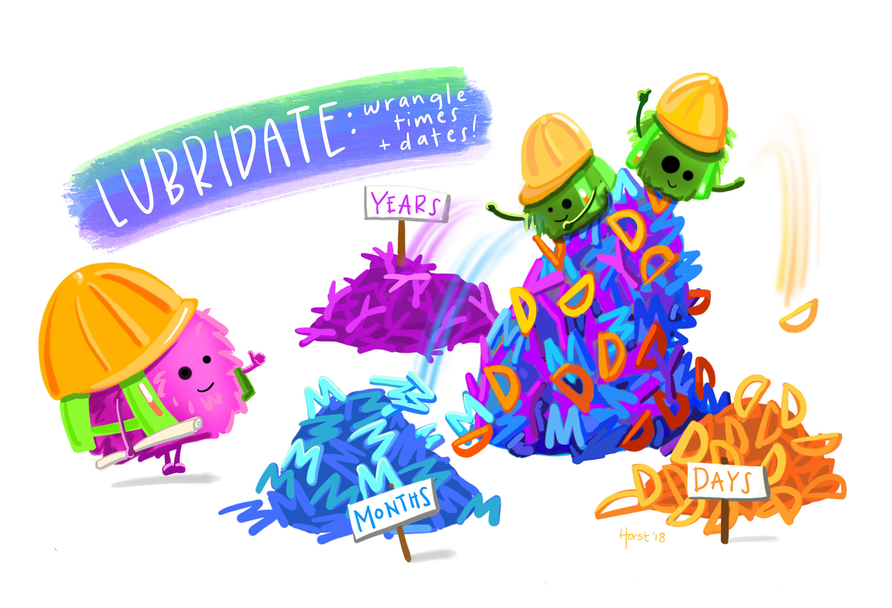
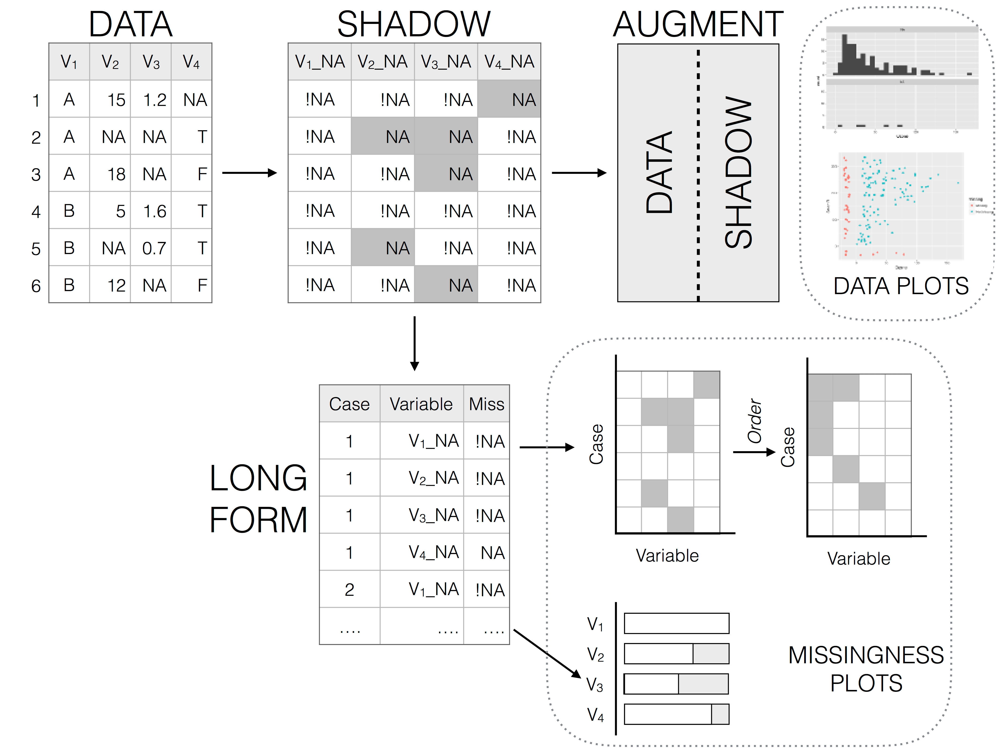

> [1] 1 2 3> [1] 1.000 2.000 3.123Data Structures & Types
CS&SS 508 • Lecture 6
30 April 2024
Victoria Sass
This week we start getting more into the weeds of programming in R.
These skills will help you understand some of R’s quirks, how to troubleshoot errors when they arise, and how to write more efficient and automated code that does a lot of work for you!
RReturning, once again, to our list of data types in R:
RReturning, once again, to our list of data types in R:

RReturning, once again, to our list of data types in R:

RReturning, once again, to our list of data types in R:
R has two types of numeric variables: double and integer.

Oftentimes numerical data is coded as a string so you’ll need to use the appropriate parsing function to read it in in the correct form.
If you have values with extraneous non-numerical text you want to ignore there’s a separate function for that.
count()A very useful and common exploratory data analysis tool is to check the relative sums of different categories of a variable. That’s what count() is for!
sort = TRUE to see the most common values first (i.e. arranged in descending order). . . .
> # A tibble: 3 × 2
> origin n
> <chr> <int>
> 1 EWR 120835
> 2 JFK 111279
> 3 LGA 104662This is functionally the same as grouping and summarizing with n().
n() is a special summary function that doesn’t take any arguments and instead accesses information about the “current” group. This means that it only works inside dplyr verbs.
> # A tibble: 3 × 2
> origin n
> <chr> <int>
> 1 EWR 120835
> 2 LGA 104662
> 3 JFK 111279n_distinct()Use this function if you want the count the number of distinct (unique) values of one or more variables.
Say we’re interested in which destinations are served by the most carriers:
A weighted count is simply a grouped sum, therefore count has a wt argument to allow for the shorthand.
How many miles did each plane fly?
> # A tibble: 4,044 × 2
> tailnum miles
> <chr> <dbl>
> 1 N14228 171713
> 2 N24211 172934
> 3 N619AA 32141
> 4 N804JB 311992
> 5 N668DN 50352
> 6 N39463 169905
> 7 N516JB 359585
> 8 N829AS 52549
> 9 N593JB 377619
> 10 N3ALAA 67925
> # ℹ 4,034 more rowsThis is equivalent to:
In addition to the standards (+, -, /, *, ^), R has many other useful arithmetic functions.
Pairwise min/max
pmin() returns the smallest value in each row. min(), by contrast, finds the smallest observation given a number of rows.
pmax() returns the largest value in each row. max(), by contrast, finds the largest observation given a number of rows.
> # A tibble: 3 × 4
> x y min max
> <dbl> <dbl> <dbl> <dbl>
> 1 1 3 1 3
> 2 5 2 2 5
> 3 7 NA 7 7Modular arithmetic
We can see how this can be useful in our flights data which has curiously stored time:
> # A tibble: 336,776 × 3
> sched_dep_time hour minute
> <int> <dbl> <dbl>
> 1 515 5 15
> 2 529 5 29
> 3 540 5 40
> 4 545 5 45
> 5 600 6 0
> 6 558 5 58
> 7 600 6 0
> 8 600 6 0
> 9 600 6 0
> 10 600 6 0
> # ℹ 336,766 more rowsLogarithms1
2^.
> [1] 1 2 3Cumulative and Rolling Aggregates
Base R provides cumsum(), cumprod(), cummin(), cummax() for running, or cumulative, sums, products, mins and maxes. dplyr provides cummean() for cumulative means.
For complex rolling/sliding aggregates, check out the slidr package.
Numeric Ranges
cut() breaks up (aka bins) a numeric vector into discrete buckets
> [1] (0,5] (0,5] (0,5] (5,10] (10,15] (15,20]
> Levels: (0,5] (5,10] (10,15] (15,20]round() allows us to round to a certain decimal place. Without specifying an argument for the digits argument it will round to the nearest integer.
What’s going on here?
round() uses what’s known as “round half to even” or Banker’s rounding: if a number is half way between two integers, it will be rounded to the even integer. This is a good strategy because it keeps the rounding unbiased: half of all 0.5s are rounded up, and half are rounded down.
Central Tendency
sample() takes a vector of data, and samples size elements from it, with replacement if replace equals TRUE.
> [1] 238.87Measures of Spread/Variation
quantile(x, 0.75) - quantile(x, 0.25) and gives you the range that contains the middle 50% of the data.
> [1] 193.75These formulas can be used in a summary call but are also useful with mutate(), particularly if being applied to grouped data.
Positions
These are all really helpful but is there a good summary descriptive statistics function?
> Sepal.Length Sepal.Width Petal.Length Petal.Width
> Min. :4.300 Min. :2.000 Min. :1.000 Min. :0.100
> 1st Qu.:5.100 1st Qu.:2.800 1st Qu.:1.600 1st Qu.:0.300
> Median :5.800 Median :3.000 Median :4.350 Median :1.300
> Mean :5.843 Mean :3.057 Mean :3.758 Mean :1.199
> 3rd Qu.:6.400 3rd Qu.:3.300 3rd Qu.:5.100 3rd Qu.:1.800
> Max. :7.900 Max. :4.400 Max. :6.900 Max. :2.500
> Species
> setosa :50
> versicolor:50
> virginica :50
>
>
> A basic example:
| Name | iris |
| Number of rows | 150 |
| Number of columns | 5 |
| _______________________ | |
| Column type frequency: | |
| factor | 1 |
| numeric | 4 |
| ________________________ | |
| Group variables | None |
Variable type: factor
| skim_variable | n_missing | complete_rate | ordered | n_unique | top_counts |
|---|---|---|---|---|---|
| Species | 0 | 1 | FALSE | 3 | set: 50, ver: 50, vir: 50 |
Variable type: numeric
| skim_variable | n_missing | complete_rate | mean | sd | p0 | p25 | p50 | p75 | p100 | hist |
|---|---|---|---|---|---|---|---|---|---|---|
| Sepal.Length | 0 | 1 | 5.84 | 0.83 | 4.3 | 5.1 | 5.80 | 6.4 | 7.9 | ▆▇▇▅▂ |
| Sepal.Width | 0 | 1 | 3.06 | 0.44 | 2.0 | 2.8 | 3.00 | 3.3 | 4.4 | ▁▆▇▂▁ |
| Petal.Length | 0 | 1 | 3.76 | 1.77 | 1.0 | 1.6 | 4.35 | 5.1 | 6.9 | ▇▁▆▇▂ |
| Petal.Width | 0 | 1 | 1.20 | 0.76 | 0.1 | 0.3 | 1.30 | 1.8 | 2.5 | ▇▁▇▅▃ |
A more complex example:
| Name | starwars |
| Number of rows | 87 |
| Number of columns | 14 |
| _______________________ | |
| Column type frequency: | |
| character | 8 |
| list | 3 |
| numeric | 3 |
| ________________________ | |
| Group variables | None |
Variable type: character
| skim_variable | n_missing | complete_rate | min | max | empty | n_unique | whitespace |
|---|---|---|---|---|---|---|---|
| name | 0 | 1.00 | 3 | 21 | 0 | 87 | 0 |
| hair_color | 5 | 0.94 | 4 | 13 | 0 | 12 | 0 |
| skin_color | 0 | 1.00 | 3 | 19 | 0 | 31 | 0 |
| eye_color | 0 | 1.00 | 3 | 13 | 0 | 15 | 0 |
| sex | 4 | 0.95 | 4 | 14 | 0 | 4 | 0 |
| gender | 4 | 0.95 | 8 | 9 | 0 | 2 | 0 |
| homeworld | 10 | 0.89 | 4 | 14 | 0 | 48 | 0 |
| species | 4 | 0.95 | 3 | 14 | 0 | 37 | 0 |
Variable type: list
| skim_variable | n_missing | complete_rate | n_unique | min_length | max_length |
|---|---|---|---|---|---|
| films | 0 | 1 | 24 | 1 | 7 |
| vehicles | 0 | 1 | 11 | 0 | 2 |
| starships | 0 | 1 | 17 | 0 | 5 |
Variable type: numeric
| skim_variable | n_missing | complete_rate | mean | sd | p0 | p25 | p50 | p75 | p100 | hist |
|---|---|---|---|---|---|---|---|---|---|---|
| height | 6 | 0.93 | 174.36 | 34.77 | 66 | 167.0 | 180 | 191.0 | 264 | ▁▁▇▅▁ |
| mass | 28 | 0.68 | 97.31 | 169.46 | 15 | 55.6 | 79 | 84.5 | 1358 | ▇▁▁▁▁ |
| birth_year | 44 | 0.49 | 87.57 | 154.69 | 8 | 35.0 | 52 | 72.0 | 896 | ▇▁▁▁▁ |
skim functionHighlights of this summary statistics function:
summary() including number missing, complete, n, sd, histogram for numeric datasummary() for an overall summary of the data (w/o specifics about columns)An explicit missing value is the presence of an absence.
In other words, an explicit missing value is one in which you see an NA.
Depending on the reason for its missingness, there are different ways to deal with NAs.
Data Entry Shorthand
If your data were entered by hand and NAs merely represent a value being carried forward from the last entry then you can use fill() to help complete your data.
fill() takes one or more variables (in this case everything(), which means all variables), and by default fills them in downwards. If you have a different issue you can change the .direction argument to "up","downup", or "updown".
> # A tibble: 4 × 3
> person treatment response
> <chr> <dbl> <dbl>
> 1 Derrick Whitmore 1 7
> 2 Derrick Whitmore 2 10
> 3 Katherine Burke 3 10
> 4 Katherine Burke 1 4Represent A Fixed Value
Other times an NA represents some fixed value, usually 0.
NaNs
A special sub-type of missing value is an NaN, or Not a Number.
These generally behave similar to NAs and are likely the result of a mathematical operation that has an indeterminate result:
If you need to explicitly identify an NaN you can use is.nan().
NAsAn implicit missing value is the absence of a presence.
We’ve seen a couple of ways that implicit NAs can be made explicit in previous lectures: pivoting and joining.
For example, if we really look at the dataset below, we can see that there are missing values that don’t appear as NA merely due to the current structure of the data.
NAstidyr::complete() allows you to generate explicit missing values by providing a set of variables that define the combination of rows that should exist.
The last type of missingness is a theoretical level of a factor that doesn’t have any observations.
For instance, we have this health dataset and we’re interested in smokers:
This sample principle applies when visualizing a factor variable, which will automatically drop levels that don’t have any values. Use drop_values = FALSE in the appropriate scale to display implicit NAs.
There are also functions to test for certain data types:
NAs)
NAs)A lot has been written about NAs and if they are a feature of your data you’re likely going to have to spend a great deal of time thinking about how they arose1 and if/how they bias your data.
The best package for really exploring your NAs is naniar, which provides tidyverse-style syntax for summarizing, visualizing, and manipulating missing data.
It provides the following for missing data:

naniar examples
visdat example
In R, we call a set of values of the same type a vector. We can create vectors using the c() function (“c” for combine or concatenate).
All elements of a vector are the same type (e.g. numeric or character)!
Character data is the lowest denomination so anything mixed with it will be converted to a character.
There are shortcuts for generating numeric vectors:
You can also assign values to a vector using Base R indexing rules.
When doing arithmetic operations on vectors, R handles these element-wise:
Other common operations: *, /, exp() = \(e^x\), log() = \(\log_e(x)\)
R handles mismatched lengths of vectors by recycling, or repeating, the short vector.
You generally only want to recycle scalars, or vectors the length 1. Technically, however, R will recycle any vector that’s shorter in length (and it won’t always give you a warning that that’s what it’s doing, i.e. if the longer vector is not a multiple of the shorter vector).
The same rules apply to logical operations which can lead to unexpected results without warning.
For example, take this code which attempts to find all flights in January and February:
== with %in%. This code will actually find flights in odd numbered rows that departed in January and flights in even numbered rows that departed in February. Unfortunately there’s no warning because flights has an even number of rows.
> # A tibble: 5 × 19
> year month day dep_time sched_dep_time dep_delay arr_time sched_arr_time
> <int> <int> <int> <int> <int> <dbl> <int> <int>
> 1 2013 1 1 517 515 2 830 819
> 2 2013 1 1 542 540 2 923 850
> 3 2013 1 1 554 600 -6 812 837
> 4 2013 1 1 555 600 -5 913 854
> 5 2013 1 1 557 600 -3 838 846
> # ℹ 11 more variables: arr_delay <dbl>, carrier <chr>, flight <int>,
> # tailnum <chr>, origin <chr>, dest <chr>, air_time <dbl>, distance <dbl>,
> # hour <dbl>, minute <dbl>, time_hour <dttm>To protect you from this type of silent failure, most tidyverse functions use a stricter form of recycling that only recycles single values. However, when using base R functions like ==, this protection is not built in.
Let’s say we had some test scores and we wanted to put these on a standardized scale:
\[z_i = \frac{x_i - \text{mean}(x)}{\text{SD}(x)}\]
Even one NA “poisons the well”: You’ll get NA out of your calculations unless you add the extra argument na.rm = TRUE (available in some functions):
Recall, we can subset a vector in a number of ways:
> [1] "Andre" "Brady"Matrices extend vectors to two dimensions: rows and columns. We can construct them directly using matrix().
R fills in a matrix column-by-column (not row-by-row!)
Similar to vectors, you can make assignments using Base R indexing methods.
We can also make matrices by binding vectors together with rbind() (row bind) and cbind() (column bind).
We subset matrices using the same methods as with vectors, except we index them with [rows, columns]1:
If a matrix ends up having just one row or column after subsetting, by default R will make it into a vector.
Matrices can contain numeric, integer, factor, character, or logical. But just like vectors, all elements must be the same data type.
In this case, everything was converted to characters!
We can access dimension names or name them ourselves:
> Number Name
> First "1" "Victoria"
> Last "2" "Sass"Matrices of the same dimensions can have math performed element-wise with the usual arithmetic operators:
To do matrix transpositions, use t().
To invert an invertible square matrix1, use solve().
All of these structures display data in two dimensions
matrix
Rdata.frame
Rtibbles
tidyverseIn practice, data.frames and tibbles are very similar!
data.frames or tibblesWe can create a data.frame or tibble by specifying the columns separately, as individual vectors:
Note: data.frames and tibbles allow for mixed data types!
This distinction leads us to the final data type, of which data.frames and tibbles are a particular subset.
Lists are objects that can store multiple types of data.
my_list <- list(first_thing = 1:5,
second_thing = matrix(8:11, nrow = 2),
third_thing = fct(c("apple", "pear", "banana", "apple", "apple")))
my_list> $first_thing
> [1] 1 2 3 4 5
>
> $second_thing
> [,1] [,2]
> [1,] 8 10
> [2,] 9 11
>
> $third_thing
> [1] apple pear banana apple apple
> Levels: apple pear bananaYou can access a list element by its name or number in [[ ]], or a $ followed by its name:
[[ ]]?Double brackets get the actual element — as whatever data type it is stored as, in that location in the list.
names() and List ElementsYou can use names() to get a vector of list element names:
pluck()An alternative to using Base R’s [[ ]] is using pluck() from the tidyverse’s purrr package.
obj1 <- list("a", list(1, elt = "foo"))
obj2 <- list("b", list(2, elt = "bar"))
x <- list(obj1, obj2)
x> [[1]]
> [[1]][[1]]
> [1] "a"
>
> [[1]][[2]]
> [[1]][[2]][[1]]
> [1] 1
>
> [[1]][[2]]$elt
> [1] "foo"
>
>
>
> [[2]]
> [[2]][[1]]
> [1] "b"
>
> [[2]][[2]]
> [[2]][[2]][[1]]
> [1] 2
>
> [[2]][[2]]$elt
> [1] "bar"pluck()An alternative to using Base R’s [[ ]] is using pluck() from the tidyverse’s purrr package.
obj1 <- list("a", list(1, elt = "foo"))
obj2 <- list("b", list(2, elt = "bar"))
x <- list(obj1, obj2)
x> [[1]]
> [[1]][[1]]
> [1] "a"
>
> [[1]][[2]]
> [[1]][[2]][[1]]
> [1] 1
>
> [[1]][[2]]$elt
> [1] "foo"
>
>
>
> [[2]]
> [[2]][[1]]
> [1] "b"
>
> [[2]][[2]]
> [[2]][[2]][[1]]
> [1] 2
>
> [[2]][[2]]$elt
> [1] "bar"pluck()An alternative to using Base R’s [[ ]] is using pluck() from the tidyverse’s purrr package.
obj1 <- list("a", list(1, elt = "foo"))
obj2 <- list("b", list(2, elt = "bar"))
x <- list(obj1, obj2)
x> [[1]]
> [[1]][[1]]
> [1] "a"
>
> [[1]][[2]]
> [[1]][[2]][[1]]
> [1] 1
>
> [[1]][[2]]$elt
> [1] "foo"
>
>
>
> [[2]]
> [[2]][[1]]
> [1] "b"
>
> [[2]][[2]]
> [[2]][[2]][[1]]
> [1] 2
>
> [[2]][[2]]$elt
> [1] "bar"When you perform linear regression in R, the output is a list!
What does a list object look like?
> List of 12
> $ coefficients : Named num [1:2] 8.284 0.166
> ..- attr(*, "names")= chr [1:2] "(Intercept)" "dist"
> $ residuals : Named num [1:50] -4.62 -5.94 -1.95 -4.93 -2.93 ...
> ..- attr(*, "names")= chr [1:50] "1" "2" "3" "4" ...
> $ effects : Named num [1:50] -108.894 29.866 -0.501 -3.945 -1.797 ...
> ..- attr(*, "names")= chr [1:50] "(Intercept)" "dist" "" "" ...
> $ rank : int 2
> $ fitted.values: Named num [1:50] 8.62 9.94 8.95 11.93 10.93 ...
> ..- attr(*, "names")= chr [1:50] "1" "2" "3" "4" ...
> $ assign : int [1:2] 0 1
> $ qr :List of 5
> ..$ qr : num [1:50, 1:2] -7.071 0.141 0.141 0.141 0.141 ...
> .. ..- attr(*, "dimnames")=List of 2
> .. .. ..$ : chr [1:50] "1" "2" "3" "4" ...
> .. .. ..$ : chr [1:2] "(Intercept)" "dist"
> .. ..- attr(*, "assign")= int [1:2] 0 1
> ..$ qraux: num [1:2] 1.14 1.15
> ..$ pivot: int [1:2] 1 2
> ..$ tol : num 1e-07
> ..$ rank : int 2
> ..- attr(*, "class")= chr "qr"
> $ df.residual : int 48
> $ xlevels : Named list()
> $ call : language lm(formula = speed ~ dist, data = cars)
> $ terms :Classes 'terms', 'formula' language speed ~ dist
> .. ..- attr(*, "variables")= language list(speed, dist)
> .. ..- attr(*, "factors")= int [1:2, 1] 0 1
> .. .. ..- attr(*, "dimnames")=List of 2
> .. .. .. ..$ : chr [1:2] "speed" "dist"
> .. .. .. ..$ : chr "dist"
> .. ..- attr(*, "term.labels")= chr "dist"
> .. ..- attr(*, "order")= int 1
> .. ..- attr(*, "intercept")= int 1
> .. ..- attr(*, "response")= int 1
> .. ..- attr(*, ".Environment")=<environment: R_GlobalEnv>
> .. ..- attr(*, "predvars")= language list(speed, dist)
> .. ..- attr(*, "dataClasses")= Named chr [1:2] "numeric" "numeric"
> .. .. ..- attr(*, "names")= chr [1:2] "speed" "dist"
> $ model :'data.frame': 50 obs. of 2 variables:
> ..$ speed: num [1:50] 4 4 7 7 8 9 10 10 10 11 ...
> ..$ dist : num [1:50] 2 10 4 22 16 10 18 26 34 17 ...
> ..- attr(*, "terms")=Classes 'terms', 'formula' language speed ~ dist
> .. .. ..- attr(*, "variables")= language list(speed, dist)
> .. .. ..- attr(*, "factors")= int [1:2, 1] 0 1
> .. .. .. ..- attr(*, "dimnames")=List of 2
> .. .. .. .. ..$ : chr [1:2] "speed" "dist"
> .. .. .. .. ..$ : chr "dist"
> .. .. ..- attr(*, "term.labels")= chr "dist"
> .. .. ..- attr(*, "order")= int 1
> .. .. ..- attr(*, "intercept")= int 1
> .. .. ..- attr(*, "response")= int 1
> .. .. ..- attr(*, ".Environment")=<environment: R_GlobalEnv>
> .. .. ..- attr(*, "predvars")= language list(speed, dist)
> .. .. ..- attr(*, "dataClasses")= Named chr [1:2] "numeric" "numeric"
> .. .. .. ..- attr(*, "names")= chr [1:2] "speed" "dist"
> - attr(*, "class")= chr "lm"R Overview
R Overview> [,1] [,2] [,3]
> [1,] "A" "B" "C"
> [2,] "D" "E" "F"> [,1]
> [1,] "B"
> [2,] "E"Complete the following sentence: “Lists are to vectors, what data frames are to…”
Create a list that contains 3 elements:
ten_numbers (integers between 1 and 10)my_name (your name as a character)booleans (vector of TRUE and FALSE alternating three times)1. Write code to create the following matrix:
> [,1] [,2] [,3]
> [1,] "A" "B" "C"
> [2,] "D" "E" "F"3. Complete the following sentence: “Lists are to vectors, what data frames are to…Matrices!1”